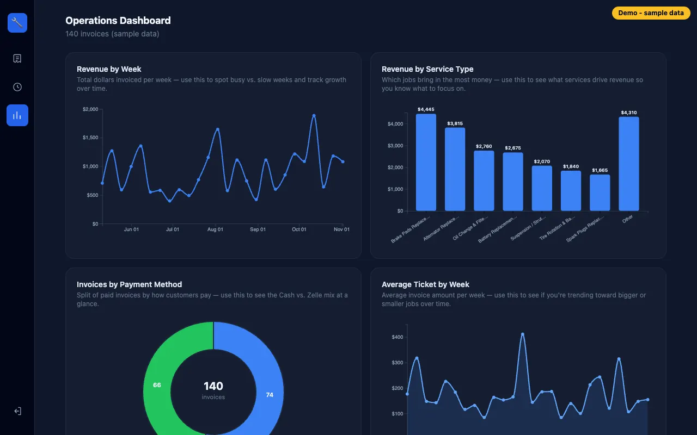
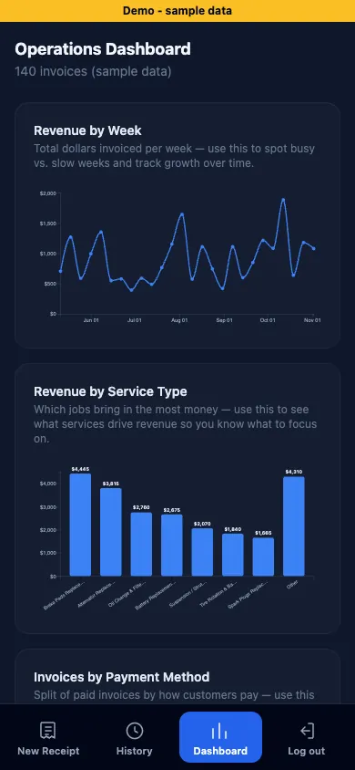

Built for a real client

Auto Shop Invoicing CRM
Invoicing and customer CRM used every day by a real NYC auto repair shop.
- Staff login with scrypt-hashed passwords and signed sessions; public invoice links are AES-256-GCM encrypted.
- D3.js dashboards for weekly revenue, service mix, and payment methods, plus a camera VIN scanner.
- Separate public demo running on fake data, with Vitest tests and a GitHub Actions CI pipeline.
Demo login: demo@example.com / TryTheDemo2026